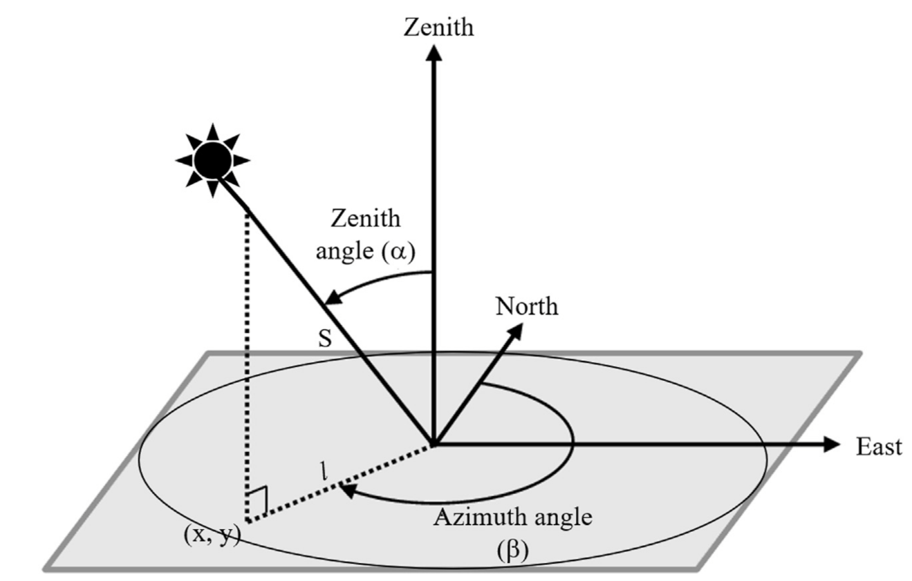

Solar Positioning
All solar position algorithms available in SolarPosition.jl return solar zenith, elevation, and azimuth angles. Algorithms that include an atmospheric refraction model also return “apparent” (refraction-corrected) values by default. This behavior can be modified by specifying a different refraction algorithm or passing NoRefraction no refraction correction is desired. See the Refraction Correction page for more details on refraction models.
 Figure 1: Visualization of solar position angles: azimuth and zenith. Image source: Haputhanthri et al..
The solar azimuth angle is typically measured clockwise from true north. The solar zenith angle is the angle between the sun and the vertical direction directly overhead. The solar elevation angle is the complement of the zenith angle (i.e., elevation = 90°- zenith).
Typically solar position algorithms can take the following set of inputs:
- Observer location: latitude, longitude, and altitude
- Date and time: in UTC or local time with timezone information
- Optional atmospheric parameters: pressure and temperature (for refraction correction)
As an example, we plot the longest day of the year solar path for an observer located at the Van Gogh museum in Amsterdam (52.35888°N, 4.88185°E) on June 21, 2023:
using SolarPosition, Dates, CairoMakie
# define observer location (latitude, longitude, altitude in meters)
obs = Observer(52.35888, 4.88185, 100.0) # Van Gogh Museum, Amsterdam
times = collect(DateTime(2023, 6, 21, 0):Minute(5):DateTime(2023, 6, 21, 23, 55));
positions = solar_position(obs, times, PSA(), HUGHES());
# plot elevation and azimuth over the day
fig = Figure(backgroundcolor = :transparent, textcolor= "#f5ab35", size = (800, 400))
ax1 = Axis(fig[1, 1], xlabel = "Time (hours)", ylabel = "Elevation (degrees)",
title = "Solar Elevation on June 21, 2023 - Amsterdam", backgroundcolor = :transparent,
xticks = 0:3:24)
ax2 = Axis(fig[1, 2], xlabel = "Time (hours)", ylabel = "Azimuth (degrees)",
title = "Solar Azimuth on June 21, 2023 - Amsterdam", backgroundcolor = :transparent,
xticks = 0:3:24)
times_hours = [Dates.hour(t) + Dates.minute(t)/60 for t in times]
lines!(ax1, times_hours, positions.elevation, color = "#f5ab35")
lines!(ax2, times_hours, positions.azimuth, color = "#f5ab35")
figAvailable Algorithms
The following solar position algorithms are currently implemented in SolarPosition.jl:
| Algorithm | Reference | Accuracy | Default Refraction | Status |
|---|---|---|---|---|
PSA | [BALL01] | ±0.0083° | None | ✅ |
NOAA | [NOA25] | ±0.0167° | HUGHES | ✅ |
Walraven | [Wal78] | ±0.0100° | None | ✅ |
USNO | [U.S25] | ±0.0500° | None | ✅ |
SPA | [RA04] | ±0.0003° | Built-in | ✅ |
PSA
The PSA (Plataforma Solar de Almería) algorithm is the default high-accuracy solar position algorithm.
The algorithm was originally published by [BALL01] and was later updated by [BMB20] with new coefficients for improved accuracy.
SolarPosition.Positioning.PSA — Typestruct PSA <: SolarPosition.Positioning.SolarAlgorithmPSA (Plataforma Solar de Almería) solar position algorithm. This algorithm computes the solar position with high accuracy using empirical coefficients. Two coefficient sets are available: 2001 (range 1999-2015) and 2020 (range 2020-2050).
Accuracy
Claimed accuracy: ±0.004° for 2020 coefficients, ±0.01° for 2001 coefficients.
Literature
This algorithm is based on the work by [BALL01] and was updated for 2020 coefficients in [BMB20].
Fields
coeffs::Int64: Coefficient set year (2001 or 2020)
NOAA
The NOAA (National Oceanic and Atmospheric Administration) algorithm provides an alternative implementation based on [NOA25].
SolarPosition.Positioning.NOAA — Typestruct NOAA <: SolarPosition.Positioning.SolarAlgorithmNOAA (National Oceanic and Atmospheric Administration) solar position algorithm. This algorithm is based on NOAA's Solar Position Calculator implementation. The algorithm is from "Astronomical Algorithms" by Jean Meeus.
By default, the NOAA algorithm uses the HUGHES atmospheric refraction model which is in accordance with the NOAA solar position calculator.
Accuracy
Claimed accuracy: ±0.0167° from years -2000 to +3000 for latitudes within ±72°. For latitudes outside this range, the accuracy is ±0.167°.
Literature
Based on the NOAA solar position calculator [NOA25] and the work by [Mee91].
Fields
delta_t::Union{Nothing, Float64}: Difference between terrestrial time and UT1 [seconds]. Ifnothing, uses automatic calculation.
Walraven
The Walraven algorithm is a solar position algorithm published in 1978 with stated accuracy of ±0.0100°.
The algorithm was originally published by [Wal78] with corrections from the 1979 Erratum [Wal79] and azimuth quadrant correction from [Spe89].
SolarPosition.Positioning.Walraven — Typestruct Walraven <: SolarPosition.Positioning.SolarAlgorithmWalraven solar position algorithm. The implementation accounts for the 1979 Erratum and correct azimuth quadrant selection.
Accuracy
Claimed accuracy is ±0.0100°.
Literature
This algorithm is based on [Wal78] with corrections from the 1979 Erratum [Wal79] and azimuth quadrant correction from [Spe89].
USNO
The USNO (U.S. Naval Observatory) algorithm provides solar position calculations based on formulas from the USNO's Astronomical Applications Department.
The algorithm offers two options for calculating Greenwich mean sidereal time, providing flexibility for different accuracy requirements.
SolarPosition.Positioning.USNO — Typestruct USNO <: SolarPosition.Positioning.SolarAlgorithmUSNO (U.S. Naval Observatory) solar position algorithm. This algorithm provides solar position calculations based on the USNO's Astronomical Applications Department formulas.
Accuracy
The accuracy is typically within a few arcminutes for most practical applications. This algorithm is suitable for general-purpose solar position calculations.
Literature
The U.S. Naval Observatory (USNO) algorithm is provided in [U.S25].
Fields
delta_t::Union{Nothing, Float64}: Difference between terrestrial time and UT1 [seconds]. Ifnothing, uses automatic calculation.gmst_option::Int64: Option for calculating Greenwich mean sidereal time (1 or 2)
SPA
The SPA (Solar Position Algorithm) is the highest-accuracy algorithm available in this package, with uncertainty of ±0.0003° for years between -2000 and 6000.
The algorithm was published by the National Renewable Energy Laboratory (NREL) in [RA04] and implements a complete heliocentric, geocentric, and topocentric solar position calculation with periodic terms for Earth heliocentric longitude and latitude.
SolarPosition.Positioning.SPA — Typestruct SPA <: SolarPosition.Positioning.SolarAlgorithmSPA (Solar Position Algorithm) from NREL. This is the most accurate algorithm for solar position calculation, suitable for high-precision applications.
The algorithm implements the complete NREL Solar Position Algorithm as described in Reda and Andreas (2004, 2007). It accounts for:
- Heliocentric position of Earth
- Nutation and aberration
- Geocentric and topocentric corrections
- Atmospheric refraction
- Parallax effects
Accuracy
Claimed accuracy: ±0.0003° (±1 arcsecond) for years -2000 to 6000.
Literature
This algorithm is based on [RA04] with corrections from the 2007 corrigendum.
Fields
delta_t::Union{Nothing, Float64}: Difference between terrestrial time and UT1 [seconds]. Ifnothing, uses automatic calculation.pressure::Float64: Annual average air pressure [Pa]temperature::Float64: Annual average air temperature [°C]atmos_refract::Float64: Approximate atmospheric refraction at sunrise/sunset [degrees]